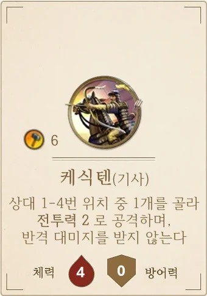
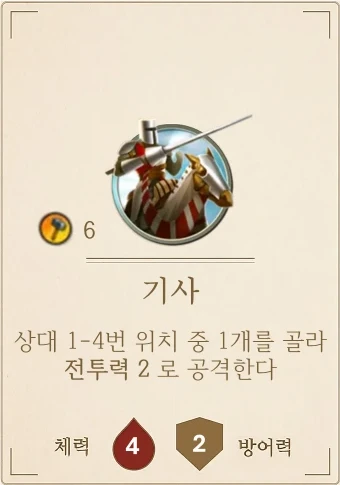
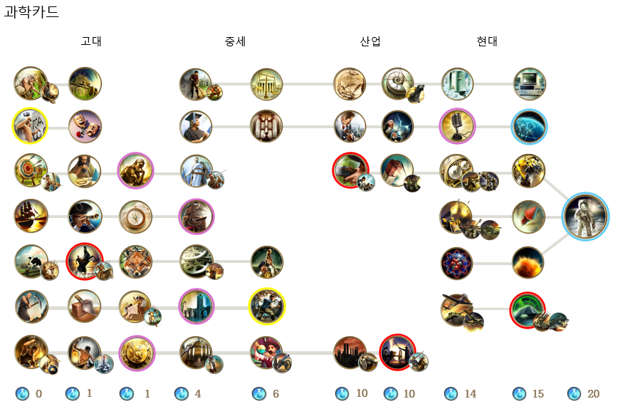

망치는 군사 카드 생산과 불가사의 투자에만 씁니다. 도시마다 한 차례에 둘 중 1개만 할 수 있습니다.
군사 카드
기술 카드에 "생산가능"이라고 적힌 카드만 만들 수 있습니다. "앞으로 생산불가"가 적힌 기술을 연구하면 그 카드는 더 이상 만들 수 없습니다.
카드에 적힌 망치를 한 번에 내면 공용 덱에서 그 카드를 가져옵니다. 한 종류당 최대 5장까지 보유할 수 있습니다.
같은 카드라도 공격 방향(왼쪽·가운데·오른쪽)이 다른 여러 장이 있습니다. 섞어 둔 공용 덱에서 맨 위 카드를 가져오므로 방향은 무작위입니다.
일부 카드는 조건이 있습니다. 예: 전함·제고이센은 첫 5타일에 해안이 있는 도시에서만 만듭니다.
고유 유닛: 일부 문명은 카드를 가져올 때 대신 고유 유닛을 가져올 수 있습니다. 기초 카드가 생산불가가 되면 고유 유닛도 더 만들 수 없습니다. 효과 적용 시에도 고유 유닛은 이름 뒤에 명시된 기초 카드로 취급합니다. (예: 케식텐은 기사 취급) 고유 유닛은 최대 3장까지 보유할 수 있고, 고유 유닛이 있는 문명은 그 기초 카드를 2장까지만 보유할 수 있습니다 (합계 5장).

+

케식텐 (고유 유닛) 최대 3장
기사 (기초 카드) 최대 2장
몽골의 예: 케식텐 3장 + 기사 2장 = 총 5장
금으로 승급하기
금은 군사 카드 승급에만 씁니다.
계열
단계
보병 계열
전사 → 장검사 → 머스킷병 → 소총병 → 보병
원거리 계열
궁수 → 합성궁병 → 석궁병 → 게틀링기관총 → 바주카
창병 계열
창병 → 파이크병 → 대전차포
기마 계열
전차 → 기마병 → 기사 → 기병대 → 탱크
공성 계열
대포 → 야포
가지고 있는 하위 카드를 현재 생산 가능한 상위 카드로 바꿉니다. 상위 카드의 생산 비용만큼 금을 냅니다.
중간의 등급을 무시하고 즉시 승급할 수 있습니다.
한 차례에 한 장만 승급할 수 있습니다.
금도 모아둘 수 없으니 그 차례에 낸 금으로만 승급합니다.
예: 창병 → 대전차포 (금 9) · 상위 카드의 생산 비용만큼 금을 내고, 중간 등급은 건너뛸 수 있습니다
불가사의
불가사의 카드에 적힌 기술을 가지고 있고, 건설 조건을 만족하면 투자할 수 있습니다.
투자할 망치를 불가사의 카드 위에 올립니다. 카드에 적힌 최소 망치 이상이어야 합니다.
한 불가사의에는 한 도시의 망치만 올립니다. 한 문명이 두 도시에서 같은 불가사의를 건설할 수 없습니다.
우선도 순으로 투자하므로, 뒤에 하는 사람은 앞사람의 투자액을 보고 정할 수 있습니다.
라운드 정산 때 가장 많이 투자한 한 명만 진척도 토큰 1개를 얻습니다. 최다 투자자가 둘 이상이면 아무도 얻지 못합니다.
진척도 토큰이 카드 오른쪽의 원 개수(맨 아래 기술 아이콘 칸 포함)만큼 모이면 불가사의 카드를 가져오고, 완성 보너스를 바로 적용합니다. 다른 문명이 그 불가사의에 모아 둔 진척도 토큰은 쓸모없어집니다.
올렸던 망치는 결과와 상관없이 모두 사라집니다.
불가사의 경쟁: 가장 많이 투자한 한 명만 진척도를 얻습니다7
과학과 기술
한 차례에 기술을 1개 연구합니다. 과학 카드에 적힌 과학 비용을 내고 카드를 가져와 효과를 적용합니다.
과학 얻는 법
문명 카드의 차례당 과학 보너스
문자를 연구하면 식량을 1:1로 과학으로 바꿀 수 있습니다. 바꾸고 남은 식량으로 식량 정산을 합니다.
화학: 차례마다 과학 2 획득
합리주의 정책, 올드 페이스풀 간헐천· 대보초 등 자연경관
과학도 모아둘 수 없습니다. 비용보다 많이 나온 과학은 사라집니다.
초반 과학기술은 아래와 같습니다.
1열 (비용 0)
2열 (비용 1)
3열 (비용 1)
농업
역법
문자
드라마와 시
궁술
수학
철학
항해
광학
나침반
목축업
기마술
수렵
광업
석공술
건축
청동기술
철제기술
화폐
기술 트리

테두리 색: 보라 정책 1개 고르기 (8장) · 노랑 문자·인쇄기술 · 빨강 위대한 장군 (기마술 등)
과학 카드는 고대 → 중세 → 산업 → 현대 순서로 놓여 있고, 오른쪽 열로 갈수록 비쌉니다.
맨 왼쪽 열의 시작 기술 7장은 비용이 0입니다.
선으로 이어진 기술은 앞 기술을 먼저 연구해야 합니다.
앞에 선이 없는 기술은 동일 비용의 다른 기술을 하나 가진 뒤 연구를 시작할 수 있습니다.
같은 라운드에 앞사람이 이미 고른 기술은 고를 수 없습니다. 교육학을 연구하면 이 제한이 사라집니다.
효과가 적용되는 때
기술 효과는 연구하는 즉시 적용합니다.
망치가 늘어나는 효과는 이번 차례 생산에 바로 쓸 수 있습니다.
"다음 차례부터"라고 적힌 효과(4장 표)는 다음 차례부터 적용합니다.
8
문화와 정책
현재 내 문화는 내가 가진 타일 수이므로, 문화를 1 얻을 때마다 새 타일을 1장 얻습니다. 정책은 한 번에 하나만 시행합니다.
문화 얻는 법
과학기술: 드라마와 시 연구 (문화 1), 음향학 (문화 1)
정책: 미학(문화 1), 전통(문화 2)
불가사의: 시스티나 성당(문화 1)
자연경관: 킬리만자로·엘도라도를 영토로 얻으면 문화 1, 엘도라도를 처음 발견하면 문화 1
고고학: 가진 사적지 1장당 문화 1
문명 능력 (시작 문화, 스페인, 일본 등)
정책 고르기
과학기술: 철학, 화폐, 공학, 신학, 라디오(보라색 테두리 기술)를 연구하면 즉시 정책 1개를 고릅니다.
정책은 하나만 시행합니다. 새 정책을 고르면 기존 정책은 끝납니다.
지금 시행 중인 정책을 다시 고를 수도 있습니다. "선택할 때마다" 효과가 다시 발동합니다.
일부 불가사의와 기술은 정책을 바꿉니다(피라미드, 펜타곤, 루브르, 자유의 여신상, 과학이론, 레이더).
정책
효과
전통
고른 차례에는 식량 정산을 하지 않습니다. 일꾼 3개를 골라 버리면 문화 2를 얻습니다
미학
고를 때마다 문화 1을 얻습니다
전제정치
고를 때마다 위대한 장군 토큰 1개를 얻습니다. 시행 중에는 선전포고에 일꾼이 필요하지 않습니다.
체제
고른 차례에는 식량 정산을 하지 않습니다. 일꾼 4개를 얻습니다 (행복을 넘으면 버림)
자유
시행 중에는 식량이 모자라도 일꾼을 잃지 않습니다
합리주의
시행 중에는 매 차례 과학 4를 얻습니다
평등
시행 중에는 문화 3당 관광 1을 얻습니다
외교
시행 중에는 행복 2를 얻습니다
9
정찰과 나침반
일꾼 1개를 정찰에 쓰면 타일 덱 맨 위 카드 1장을 볼 수 있고, 나침반을 연구하면 본 카드를 맡아둘 수 있습니다. 정찰에 쓴 일꾼은 사용한 일꾼이 되므로, 선전포고(사용하지 않은 일꾼 필요)에 쓸 수 없습니다.
정찰과 맡아두기의 흐름
정찰
일꾼 배치 단계에서 사용하지 않은 일꾼 1개를 타일 대신 정찰에 씁니다. 이 일꾼은 사용한 일꾼이 되어 그 차례에 선전포고에 쓸 수 없습니다.
타일 덱 맨 위 카드 1장을 봅니다. 한 차례에 1장만 볼 수 있습니다.
본 카드는 그 차례에 바로 덱에 돌려넣고 덱을 섞습니다.
정찰로 자연경관을 찾을 수 있습니다. 엘도라도를 게임 중 처음 발견한 사람은 문화 1을 얻습니다. 카드를 발견하는 것과 영토로 얻는 것은 서로 다릅니다.
나침반으로 맡아두기
과학기술 나침반을 연구한 뒤에는 정찰한 카드를 돌려넣지 않고, 그 위에 정찰했던 일꾼을 올린 채 맡아둘 수 있습니다.
맡아둘 수 있는 카드는 1장까지입니다.
다음에 새 타일을 얻을 때 덱에서 뽑는 대신 맡아둔 카드를 가져옵니다.
일꾼이 맡아둔 카드 위에 있는 동안에는 정찰을 더는 할 수 없습니다.
자기 차례에 언제든 맡아둔 카드를 덱에 돌려넣고 섞어 일꾼을 돌려받을 수 있습니다. 돌아온 일꾼도 그 차례에는 사용한 일꾼이라 선전포고에 쓸 수 없고, 그 차례에 다시 정찰할 수도 없습니다.